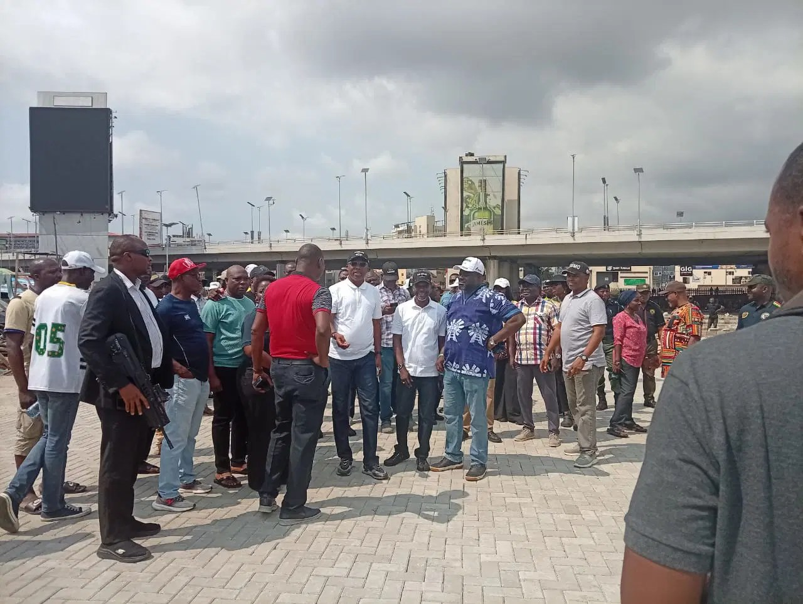

Obalende MTN bus park to open December, accommodate 1,000 buses — Wahab

The Lagos State Government says the redevelopment of Obalende’s Y’ello Bus Park is expected to be completed and open for public use by the end of December 2026. MTN Nigeria is developing the facility as part of its corporate social responsibility programme, and it is designed to accommodate about 1,000 buses.
Commissioner for the Environment and Water Resources Tokunbo Wahab announced the timeline during an inspection of the Obalende site and an MTN-sponsored recreational park under the Falomo bridge in Ikoyi. He said the government had agreed on a six-week completion window after discussions with transport unions, contractors and the governor’s transportation adviser. Operators are to move temporarily from the immediate construction area so work can proceed.
The park was initially given a 21-week completion target after being handed over to MTN on April 15, 2026. The September 11 deadline was missed amid heavy rainfall between June and August and operational issues involving businesses already operating at the site. Construction resumed in mid-October, and work underway by mid-November included paving, curbing and fencing. Planned features include dedicated parking and loading bays, sleeping facilities for drivers, toilets, green areas, solar lighting, electric-vehicle charging points and a recycling drop-off station.
Special Adviser on Transportation Sola Giwa said commuters and operators will not be charged to enter the terminal. The park will remain government property under the Ministry of Transportation’s supervision. Giwa said the state is working with transport unions on its use and that LASTMA will enforce rules against buses parking or picking up passengers on road corridors outside the terminal.
At Falomo, LASPARK General Manager Adetoun Popoola said the under-bridge site, previously affected by waste dumping and misuse, is being converted into a public relaxation space modelled on JJT Park in Alausa. It will be free for everyday recreation, while organisations holding formal events or competitions will pay a nominal maintenance fee.
Source: Vanguard